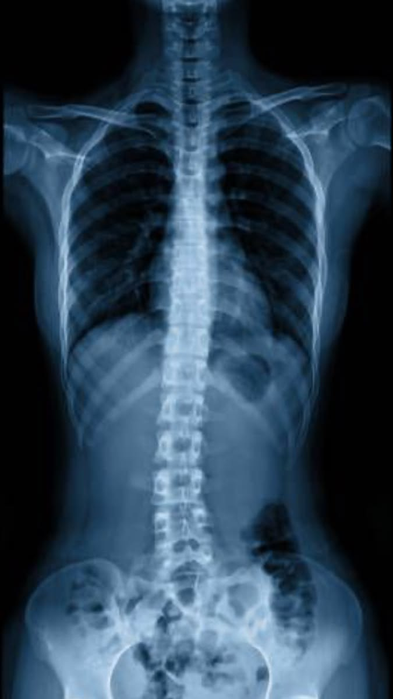

Живое AI-демо
Загрузите снимок — нейросеть проанализирует его прямо в браузере.
Перетащите снимок сюда
или нажмите для выбора файла
Здесь появится результат анализа
Зарегистрированная медицинская нейросеть «NeuroScan» находит до 95% скрытых патологий и автоматически формирует черновик заключения для врача-рентгенолога.
✓ Бесплатная демонстрация ✓ Без установки

Мы знаем, с чем сталкиваются главные врачи каждый день.
До 100 снимков в смену, «замыливается» глаз, растёт риск ошибки.
В регионах результат КТ можно ждать 2–3 дня вместо 5 минут.
Низкая пропускная способность отделения и очереди на диагностику.
Мелкие новообразования и микротрещины легко пропустить.
Снимок из локальной PACS-системы клиники автоматически отправляется в NeuroScan.
Нейросеть обрабатывает кадр, сверяясь с базой из 5 000 000+ случаев.
Врач видит тепловую карту патологий и готовый текст для протокола.
Специфичность — 92.1%. Подтверждено клиническими испытаниями.
Закрытый контур VPN. Снимки обезличиваются. Сервера на территории РФ.
Имеем регистрационное удостоверение как медицинское изделие.
«Внедрение NeuroScan в сети клиник «Медиан» позволило сократить время выдачи заключений по КТ лёгких с 40 до 18 минут. За 3 месяца система помогла выявить 14 ранних стадий онкологии, которые пропустил бы уставший персонал в ночную смену».
Загрузите снимок — нейросеть проанализирует его прямо в браузере.
Покажем, как NeuroScan интегрируется в вашу PACS-систему.